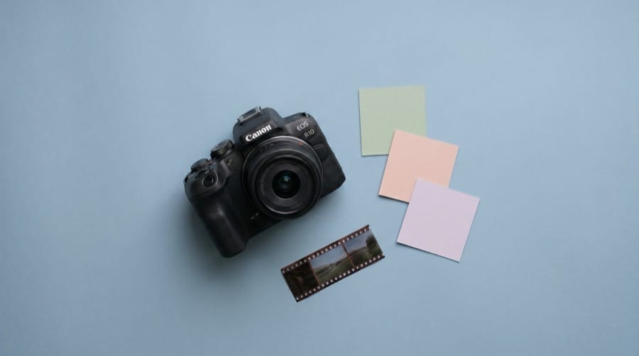
Vidéo · Design / 2025
Ma passion pour l'image
Un vlog vertical, narré en anglais, qui montre le passage des coulisses au résultat final. J’y travaille le montage, l’étalonnage, le motion design et le son.
PORTFOLIO / PROJETS
Graphisme, audiovisuel, communication et web : retrouvez mes 20 projets. Chaque fiche présente le contexte, mon travail et les réalisations.

Vidéo · Design / 2025
Un vlog vertical, narré en anglais, qui montre le passage des coulisses au résultat final. J’y travaille le montage, l’étalonnage, le motion design et le son.

Design · Communication / 2025
Deux affiches pour le musée fictif MAHA : une sur l’Antiquité, l’autre sur le Moyen Âge. J’ai construit les compositions avec Illustrator et InDesign, puis détouré et retouché les statues dans Photoshop.
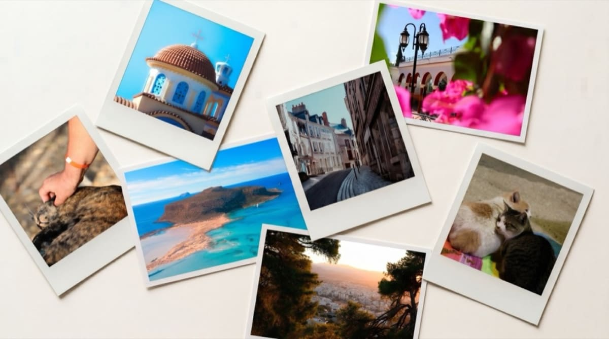
Photo / 2025
Une sélection de mes photographies : portraits, architecture, paysages, animaux et scènes urbaines.
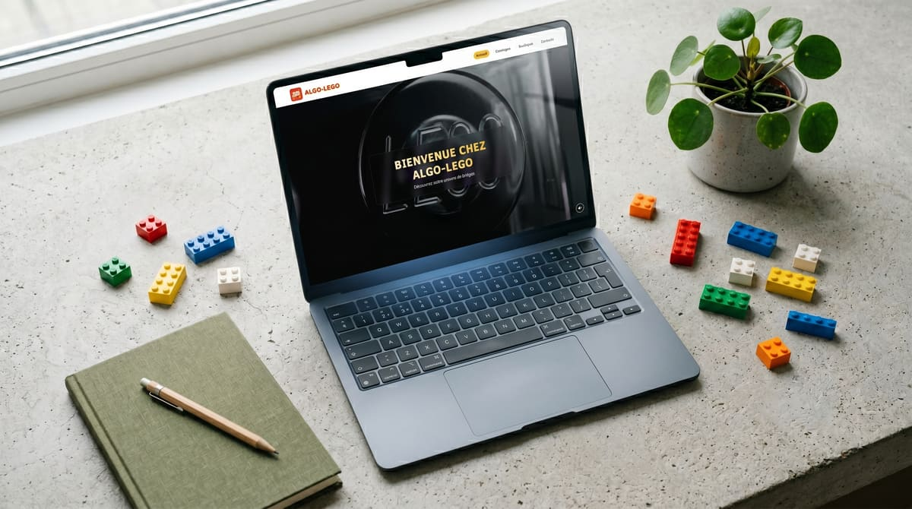
Web · Design / 2025
Un site conçu en groupe en BUT MMI pour ALGO-LEGO. Le travail va des wireframes à l’intégration HTML, CSS et JavaScript, avec une charte commune aux différentes pages.
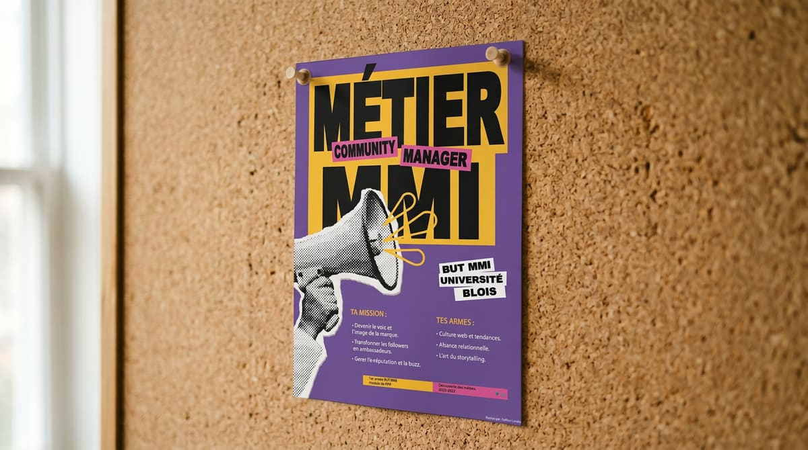
Design · Communication / 2026
Une affiche A3 sur le métier de community manager, conçue pour les portes ouvertes de l’IUT de Blois. Une palette violet, jaune et rose, un mégaphone en trame et une hiérarchie pensée pour la lecture à distance.
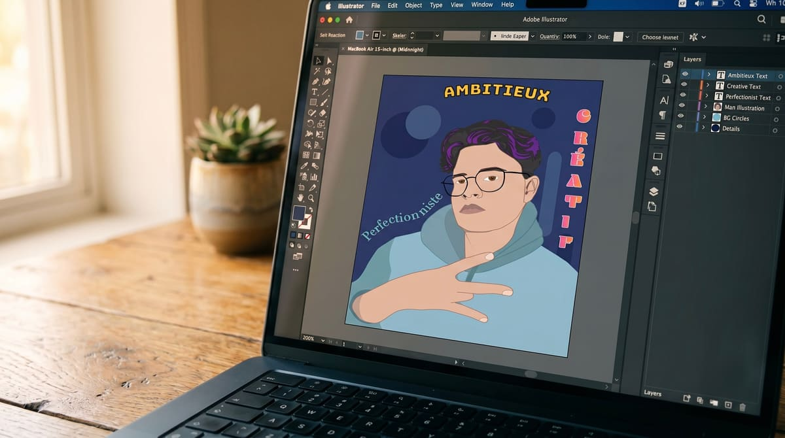
Design / 2025
Un autoportrait dessiné à la plume dans Illustrator à partir d’une photographie. Trois mots, Ambitieux, Créatif et Perfectionniste, reçoivent chacun leur propre traitement typographique.

Vidéo · Communication / 2025
Une interview de Mathéo et Émilien, deux diplômés MMI devenus entrepreneurs, réalisée pour les portes ouvertes de l’IUT. Préparation des questions, tournage, captation sonore et montage.
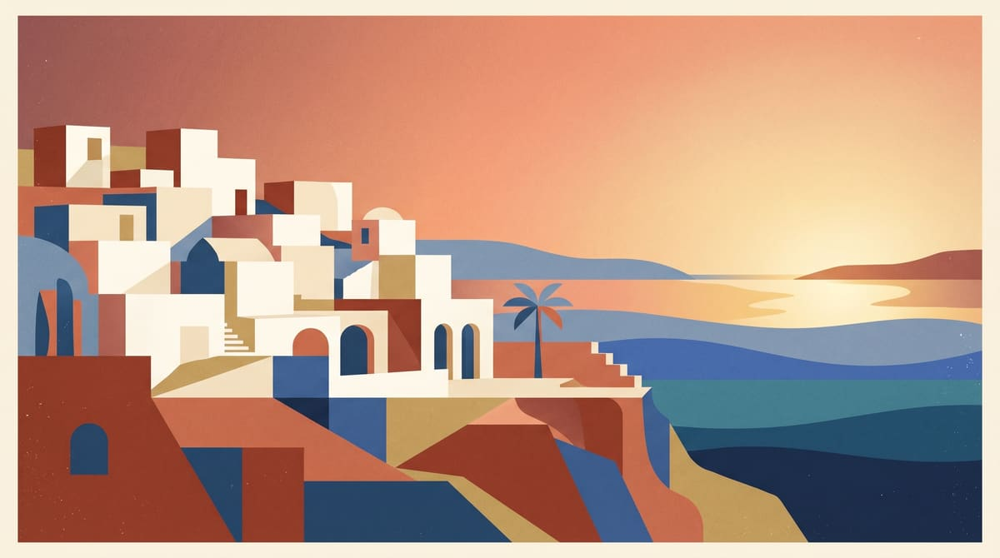
Vidéo / 2025
Un journal visuel de mon voyage en Crète. Le montage associe mes photographies à des plans aériens de Pixabay, avec un travail sur le rythme, les animations et la couleur.

Web / 2026
Un site vitrine réalisé avec Marina Chea dans le cadre de la SAÉ 203. Wireframes papier, intégration en Grid et Flexbox, interactions JavaScript et données produits gérées en PHP/MySQL.

Communication / 2025
Une campagne de lancement fictive pour le robot de tri Binko, réalisée en groupe. Nous avons conçu des posts pour plusieurs publics et une vidéo publicitaire générée par IA.
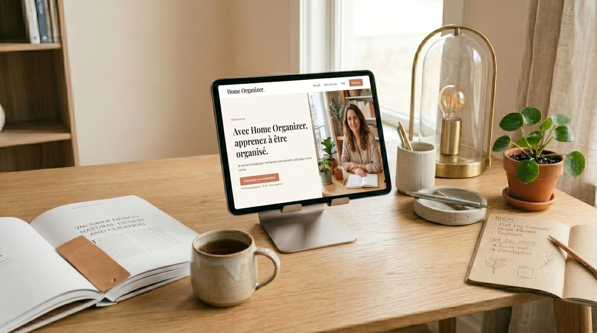
Web · Design / 2026
Une landing page pour une coach en organisation du quotidien, réalisée en intégration web. Maquette Figma, visuels générés avec Google Flow et huit sections qui conduisent vers la réservation.

Design / 2026
Un montage Photoshop autour d’une Porsche 911 GT3 RS. Masques, typographie et flou directionnel composent un visuel sportif, décliné du format A4 au carré Instagram.
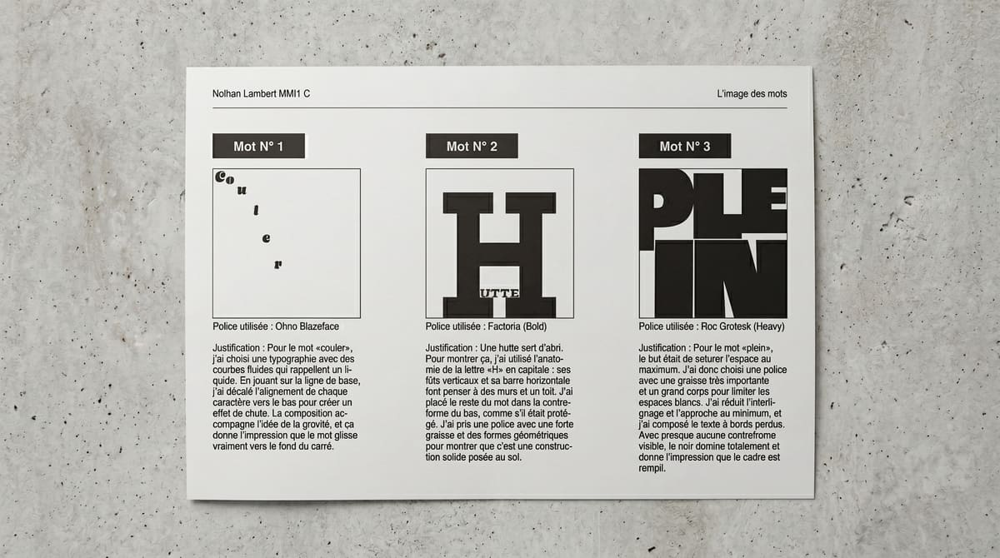
Design / 2026
Quatre compositions qui donnent une forme au sens des mots : Couler, Hutte, Plein et CHuuuuuuuut. Un exercice sur la typographie, l’espace et le rythme de lecture.
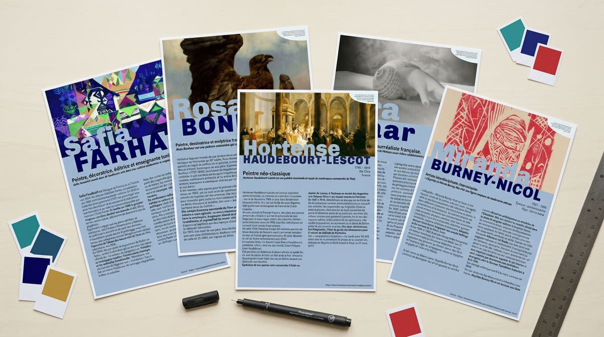
Design / 2026
Cinq fiches artistes A5 réalisées dans InDesign à partir d’une direction artistique imposée. Les gabarits et les styles assurent la cohérence entre les différentes mises en page.
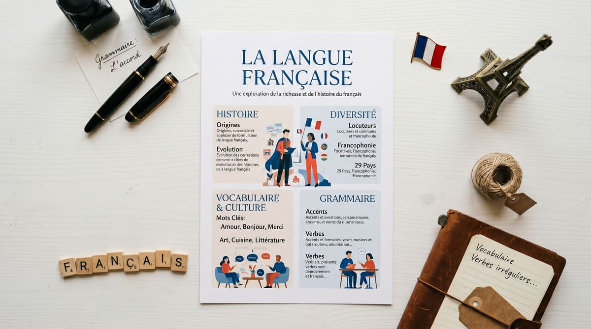
Design · Communication / 2025
Une infographie sur la langue française réalisée en design de l’information. Le travail organise les données sur les usages, les locuteurs et le réseau des Instituts français.
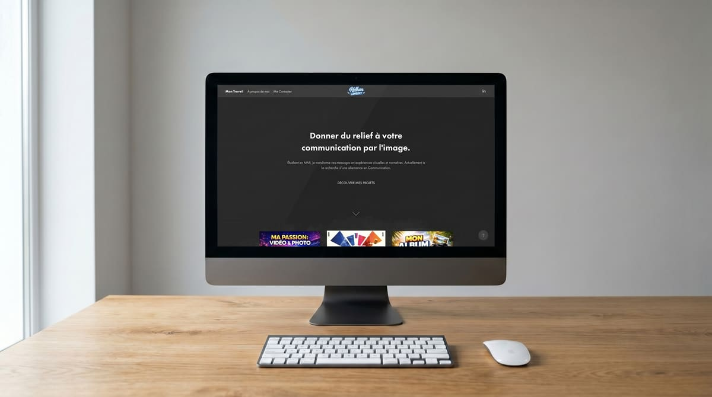
Web · Design / 2025–2026
Mon premier portfolio, réalisé avec Adobe My Portfolio sur nolhan.work. Il m’a permis de sélectionner et de présenter mes premiers travaux avant la refonte du site. Une archive est encore consultable.

Design / 2026
Un ensemble de 14 pictogrammes pour Tokyo. Des formes arrondies et une palette noir, gris et rouge relient les transports, la restauration et les lieux culturels.

Design / 2026
L’identité d’une agence fictive d’espions, conçue en groupe pour la SAE 202. J’ai pris en charge le logo, l’identité visuelle et l’affiche. La taupe remplace le O de MOLE et sert de point de départ à l’ensemble.

Vidéo / 2026
Une publicité pour notre agence fictive Mole & Co. J’ai réalisé le tournage, dirigé les scènes et écrit une grande partie du script. Le montage a été réalisé en binôme avec un camarade.

Communication / 2026
Une plaquette commerciale pour l’agence fictive Mole & Co., réalisée dans le cadre de la SAE 202. Elle présente les services en reprenant la charte graphique et des témoignages fictifs liés à l’exercice.